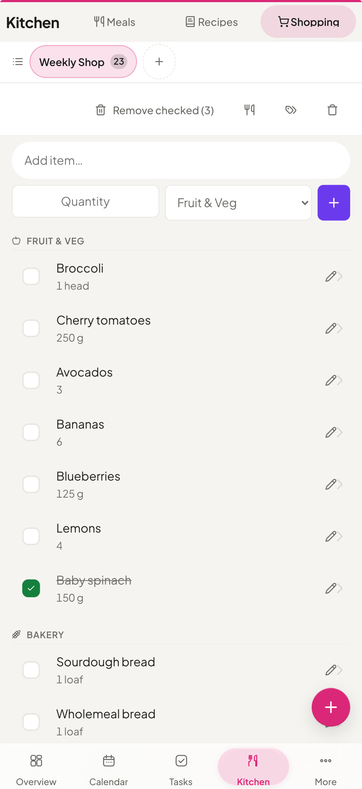
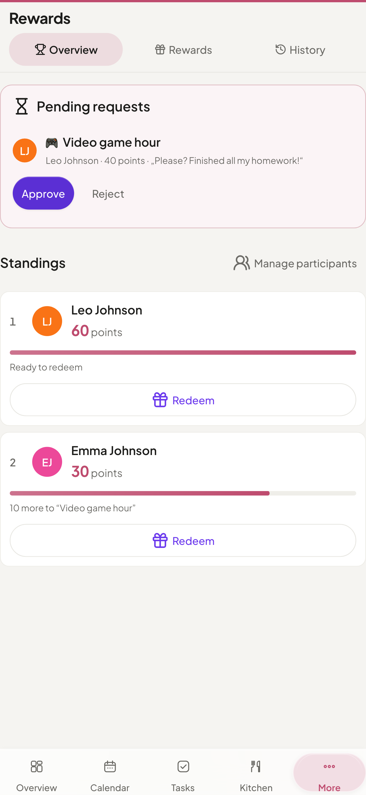

One home instead of many subscriptions.
The self-hosted family planner: tasks, calendar, budget and shopping on a server you own. For a family, a couple, or just you.


This is the whole thing, on one screen.
No demo account, no sales call. The screens your family opens every day, at the size you will actually use them. The rest are further down.
Everything due today, in one place. Tasks, the calendar, tonight’s dinner and the shopping list, without opening a single other app.
Google, iCloud and Nextcloud, finally in one calendar. Two-way sync, so an appointment added here lands on every phone in the house.

Ten apps, one place.
Ten apps a household pays for separately, and the one place that does all of it on a server you own. Nothing here is a plan or a roadmap: every line is built and shipping today.
- a to-do & task appis replaced byTasks - Kanban, deadlines, recurring, multi-assignment
- a shared calendar subscriptionis replaced byCalendar - sync, subscriptions, per-event visibility
- a cost-splitting appis replaced byShared expenses - shared costs with debt simplification
- a budgeting appis replaced byBudget - income, expenses, accounts, savings goals
- a meal planner & recipe appis replaced byMeals & Recipes - weekly planner with shopping export
- a grocery-list appis replaced byShopping - shared, aisle-organized lists
- a pantry & expiry trackeris replaced byPantry - stock, storage location, best-before dates
- a document manageris replaced byDocuments - tagged, searchable family files
- a home-inventory appis replaced byInventory - owned belongings, purchase price, warranty, linked receipts
- a notes app & contacts syncis replaced byNotes & Contacts - Markdown notes, CardDAV sync
There's a calmer way. Self-hosted, and yours.
The modules talk to each other
This is the part twenty separate apps cannot do. What happens in one module shows up where you need it, without anyone re-typing it.
-
Meal plan for the week Ingredients on the shopping list
One tap sends every ingredient from the week's plan to the shared list, sorted by aisle. Nobody transcribes a recipe into a notes app again.
-
A chore gets ticked off Points land on your kid's balance
Any task can carry a point value. Finishing it credits whoever it was assigned to, and those points buy real rewards from a catalog you control.
-
A receipt gets filed It hangs on the transaction
Attach it to the budget entry from the documents you already keep, or upload it on the spot. Filed once, findable from both sides.
-
The last jar goes out of the pantry It is already on the shopping list
Pantry keeps amounts and best-before dates - and speaks up before one of them is reached. What runs low or runs out moves to the shared list with one tap, and buying it puts it back in stock. Household of five or household of one, the loop is the same.
Everything your household needs
A complete set of tools for your household, designed to work together, not scattered across twenty separate tabs.
Everyone knows what needs doing.
Shared tasks with deadlines, priorities, subtasks, tags and recurring schedules, assignable to several family members at once.
- Kanban board with one-tap status changes
- Multi-member assignment with stacked avatars
- Optional two-way sync with CalDAV reminder lists
- Lock a task so only its creator and admins can change it
- A history of what was completed, by day and by member
Health that stays in the family.
Vitals, medications, lab results, activity and cycles, tracked per member, private by default, and never leaving your server.
- Cycle ring with period & fertile-window predictions
- Medication reminders with refill alerts
- Per-entry visibility: private or shared
- Parents can record a child’s fever and medication

Dinner sorted before anyone asks.
A weekly drag-and-drop planner with repeating meals and ingredient lists that export straight to the shopping list in one click.
- Drag-and-drop weekly planner with repeats
- Reusable recipes you can scale & duplicate
- A shared shopping list, sorted by aisle and updating live

No surprise at the end of the month.
Track who spent what, split shared costs automatically, and see exactly where the money goes.
- 57 currencies, recurring entries, weekly/monthly/yearly statistics, monthly budgets & savings goals
- Subscription tracker with renewals, budgets & alerts
- Shared costs for household, trips and events, with automatic debt simplification
- Share an entry's amount while its title and category stay private

The other sixteen, each one independent. Turn on what fits your household; the rest stays out of the way.
Calendar
Two-way sync with Google and CalDAV, one-way push to Outlook.com via Microsoft Graph, public ICS subscriptions, recurring events, holiday overlays and per-event visibility.
Shopping
Collaborative lists grouped by aisle and ordered to match your shop, with swipe gestures and one-tap import from the meal plan.
Recipes
Create, duplicate and scale reusable recipes, then pre-fill meal slots or send the ingredients to a shopping list. A self-hosted Mealie or Tandoor instance can be mirrored read-only.
Pantry
What is actually in the house: amount, storage location and best-before date, with expiry and low-stock filters, and a two-way handover with the shopping list.
Documents
Family files with previews, folders, visibility controls and bulk actions. Storage on a local folder, WebDAV or Google Drive; Paperless-ngx and Papra optional.
Rewards
Points on tasks credit the assigned member, with a configurable default for new tasks, a parent-approved catalog and an auditable ledger.
Notes & Contacts
Colored Markdown sticky notes for recipes, memos and quick reminders, with checklists you tick off by tapping them. Plus a shared contact directory with CardDAV sync and vCard import/export.
Birthdays
Birthday tracker with automatic annual calendar events, age display and custom reminders.
Family
Member profiles with roles, photos and contact details, kept in sync with Contacts and Birthdays.
Reminders
Reminders on tasks and calendar events with an in-app badge, plus opt-in push notifications that reach you even when the app is closed.
API tokens
Bearer and X-API-Key tokens against a documented OpenAPI 3.0 spec, plus an MCP endpoint at /mcp that lets a client like Claude Desktop drive the API in plain language.
Backup
Scheduled backups with pre-restore rollback, optional WebDAV cloud upload (Nextcloud, ownCloud, Hetzner, etc.).
Housekeeping
Manage household staff: schedules, check-in/out, daily or hourly billing, chores and supplies.
Inventory
What you own: brand, model, serial number, storage location, purchase price, warranty and condition, with linked receipts and bookings. Off by default; households turn it on.
Schedule
Rotating shift patterns and fixed weekly timetables from a single cycle model, with per-day exceptions and an explicit day off. The calendar shows them as a read-only layer computed on read, so changing a pattern leaves no stale appointments behind.
Waste collection
Manual pickup rhythms or an imported municipal ICS calendar, per-occurrence moves and skips, a Dashboard widget and a switchable Calendar layer. Off by default; households turn it on.





Not a photo library, a password manager or a media server: Yuvomi replaces the apps a household runs on, not your whole server. What you already run can stay. Calendars and contacts sync both ways over CalDAV and CardDAV, documents can live on WebDAV or Google Drive, an idle wall tablet can show photos from your own Immich, and API tokens plus the MCP endpoint let the rest of your setup talk to it.
The three questions worth asking first
- What if this project stops?
- Nothing changes on your machine. It is MIT-licensed and self-hosted, there is no server of ours anywhere in the path, and the only thing that leaves your machine is a version check against the GitHub releases API. The container you already pulled keeps running exactly as it does today, with or without us.
- What if I want my data somewhere else?
- Copying one file is the whole export. Everything lives in a single SQLite file on your own disk. Scheduled backups write a restorable archive on top of that, and the documented API plus the MCP endpoint pull anything out in whatever shape you need.
- What if I lose the encryption key?
- Then the database is gone, and we cannot help you. That is the honest answer: SQLCipher has no recovery path and no back door, which is the entire point of it. Store the key the way you store the ones that matter. Encryption is optional; if you would rather not carry that risk, leave it off and the file stays readable.
Runs on your hardware
A Docker or Podman container that drops onto any home server or NAS. Or install it in a couple of clicks from your platform's app store.
Docker / Podman
Pre-built image, one compose command - or rootless with Podman on RHEL, Fedora and CentOS Stream.
Proxmox
A Debian LXC with nesting=1, or a plain VM, running the Docker path.
TrueNAS
In the SCALE Community Apps catalog: install from the web UI, no terminal.
Guide 1-clickUmbrel
Available in the Umbrel App Store; everything stays on your Umbrel.
Guide 1-clickUnraid
A Community Apps template: add it straight from the Unraid Apps tab.
GuideTwo more routes need no platform of their own: the guided web installer and installing from source.
Now open .env and replace both REPLACE_WITH_… placeholders with the two values you just generated. Leave DB_ENCRYPTION_KEY on its placeholder and your database is encrypted with a key that is printed on this page. Once a database is encrypted, a lost or changed key never opens it again, not by you and not by us, so write the value down. To run without encryption, clear the line instead of filling it.
Then open http://localhost:3000. The first visit walks you through creating your admin account. Prefer a guided setup? The step-by-step installer handles HTTPS, SSO and backups for you.
Take back control of your own data.
You install it once and it is yours after that. No account with us, no subscription, and nothing of ours between your household and its data.